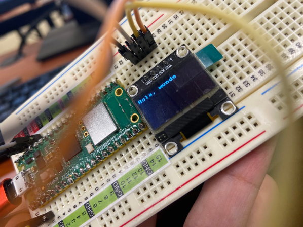

2.1.1
Practica De inicio es la básico de Desplegar algo en pantalla, algunos quieren el logo de ISC, esta bien, otro texto simple, se agradece, en el OLED Display.

from machine import Pin, I2C
from ssd1306 import SSD1306_I2C
import framebuf
i2c = I2C(0, sda=Pin(0), scl=Pin(1), freq=400000)
oled = SSD1306_I2C(128, 64, i2c)
# Crea un buffer de imagen en blanco
buf = bytearray(b'\x00\x00\x00\x00\x00\x00\x00\x00\x00\x00\x00\x00\x00\x00\x00\x00'
b'\x00\x00\x00\x00\x00\x00\x00\x00\x00\x00\x00\x00\x00\x00\x00\x00'
b'\x00\x00\x00\x00\x00\x00\x00\x00\x00\x00\x00\x00\x00\x00\x00\x00'
b'\x00\x00\x00\x00\x00\x00\x00\x00\x00\x00\x00\x00\x00\x00\x00\x00'
b'\x00\x00\x00\x00\x00\x00\x00\x00\x00\x00\x00\x00\x00\x00\x00\x00'
b'\x00\x00\x00\x00\x00\x00\x00\x00\x00\x00\x00\x00\x00\x00\x00\x00'
b'\x00\x00\x00\x00\x00\x00\x00\x00\x00\x00\x00\x00\x00\x00\x00\x00'
b'\x00\x00\x00\x00\x00\x00\x00\x00')
# Crea un frame buffer para la imagen
fb = framebuf.FrameBuffer(buf, 128, 64, framebuf.MONO_HLSB)
# Limpia la pantalla
oled.fill(0)
oled.show()
# Establece el tamaño de fuente y la posición de inicio
font_size = 1
x = 0
y = 0
# Dibuja "Hola, mundo" en la pantalla
oled.text("Hola, mundo", x, y, 1)
# Muestra la pantalla con el mensaje
oled.show()
2.1.2
Desplegar la hora de Internet en la Pico usando su Wifi integrada para que interrogue un servidor NTP Time Server, en el OLED DIsplay.

from machine import Pin, I2C
from ssd1306 import SSD1306_I2C
import framebuf
import utime
# Crea un objeto I2C
i2c = I2C(0, sda=Pin(0), scl=Pin(1), freq=400000)
# Inicializa la pantalla OLED
oled = SSD1306_I2C(128, 64, i2c)
# Crea un buffer de imagen en blanco
buf = bytearray(b'\x00' * 1024)
# Crea un frame buffer para la imagen
fb = framebuf.FrameBuffer(buf, 128, 64, framebuf.MONO_HLSB)
# Limpia la pantalla
oled.fill(0)
# Establece el tamaño de fuente y la posición de inicio
font_size = 1
x = 0
y = 0
while True:
# Obtiene la hora local y la formatea como una cadena de texto
current_time = utime.localtime()
time_str = "{:02d}:{:02d}:{:02d}".format(current_time[3], current_time[4], current_time[5])
# Dibuja la hora en la pantalla
oled.fill(0) # Limpia la pantalla antes de escribir la nueva hora
oled.text(time_str, x, y, 1)
# Muestra la pantalla con la hora
oled.show()
# Actualiza la hora cada segundo (ajusta el valor de utime.sleep según sea necesario)
utime.sleep(1)